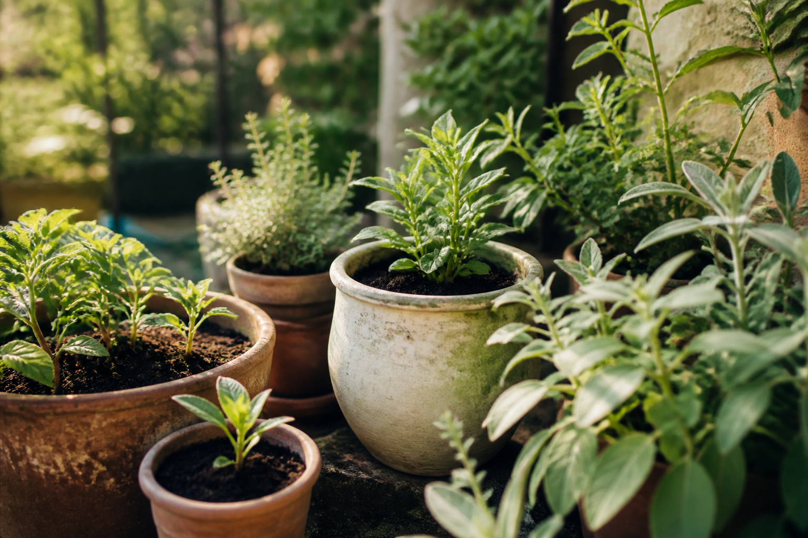
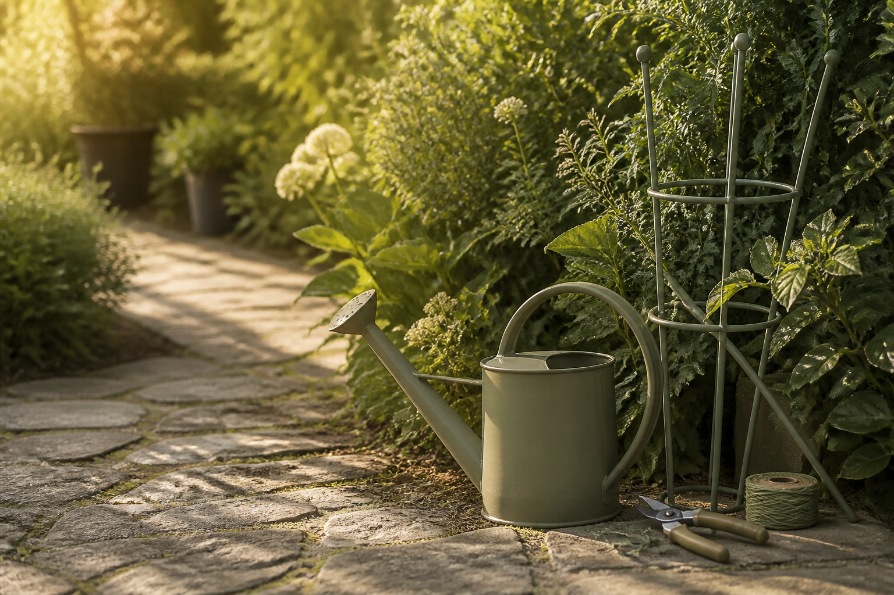
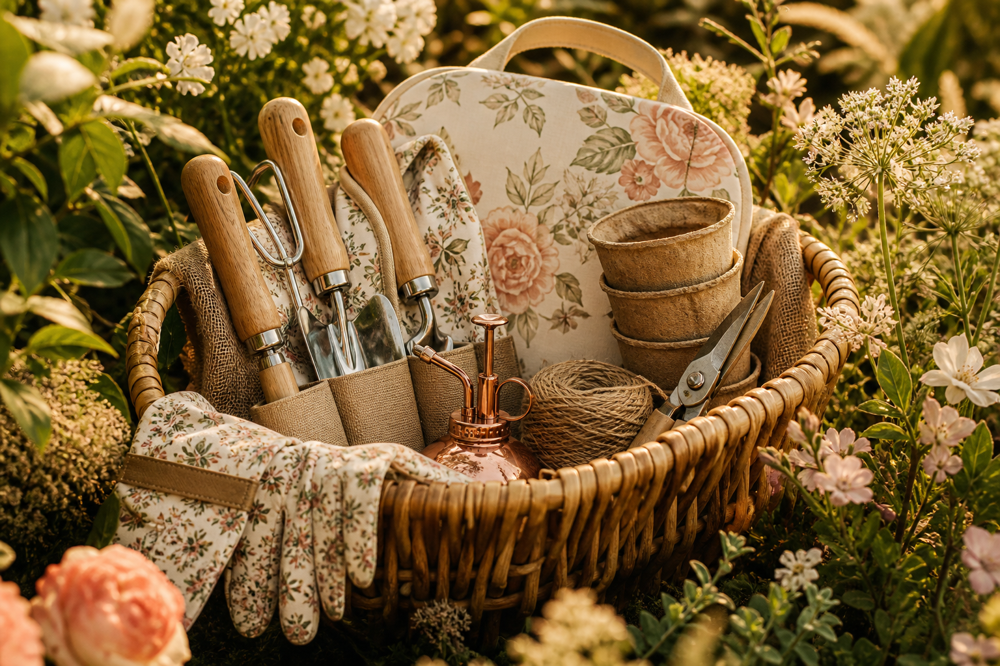

Smart Recommendations
What fits this garden?
One unified Adaptive Garden Intelligence system
CRUVIT brings everything you need for your garden into one connected system — built around your specific garden, not an average garden.
Guidance shaped by where your garden actually is, the plants in it, and the context you choose to provide.
Private by design. You choose what to share.
One garden. One intelligence.
CRUVIT is designed around one specific garden — its location, plants, conditions, history and the information you choose to share. Recommendations, care, plant health, design, tasks and product solutions are intended to work from the same garden context, so the experience becomes increasingly relevant over time.
These are not independent apps. They are different actions powered by the same understanding of your garden — with some capabilities already real, others still evolving.
Your Garden
My Garden context — plants, trusted location/climate when available, and what you choose to share.
What fits this garden?
Designed to help investigate what may be wrong and connect symptoms, garden context and next actions.
Design decisions informed by the garden’s context and your goals.
What should happen, and when — the execution layer of garden understanding.
What solution or product may fit this garden need?
What worked or did not work — evolving direction for future guidance.
Evolving directionOutcome / feedback → better garden understanding → more relevant future guidance Evolving direction
CRUVIT is designed so garden context does not have to start over in every module. The same evolving garden understanding should increasingly connect decisions across the system.
Today: My Garden persistence, climate-aware recommendations when location is trusted, care tasks, plant identification/health investigation surfaces, Garden Design, and a Shop shell exist. Full outcome learning and fully validated disease diagnosis are future core — not claimed as current.
My Garden is the living context for CRUVIT — not a separate silo. It holds the plants and place that recommendations, care, health, design and shopping are intended to serve.
CRUVIT is designed to learn from the garden information you choose to share — while collecting only the information needed for a clear garden purpose.
You decide what garden information becomes part of your CRUVIT experience.
Garden information is used to make the experience more relevant — not collected simply because it can be.
CRUVIT is built around data minimization, clear purpose and user control as its garden intelligence develops.
When CRUVIT understands a need in your garden, the Store is designed to help surface a focused set of relevant products, kits and solutions — connected to garden context, not an endless generic catalog. The CRUVIT Intelligent Store is a permanent long-term pillar; physical commerce is currently in validation.
Products are intended to be surfaced because they fit a real garden need and its context.
Fewer, more relevant choices instead of hundreds of near-identical garden products.
When you choose to share whether a solution worked, that outcome is intended to help make future guidance more relevant to your garden.
Evolving direction
Care solutions intended for the plants and needs of a real garden.

Support tools shown in garden context — not marketplace packshots.

Coordinated solutions for garden needs — selective, not endless SKUs.
Access to the Store is not a Premium benefit. Premium is about deeper Garden Intelligence; the Store is a separate direct monetization pillar of CRUVIT. Affiliate / referral is supplemental and does not replace the direct Store by default.
Browse Shop in CRUVITOne connected system. Built around the garden you are actually growing.